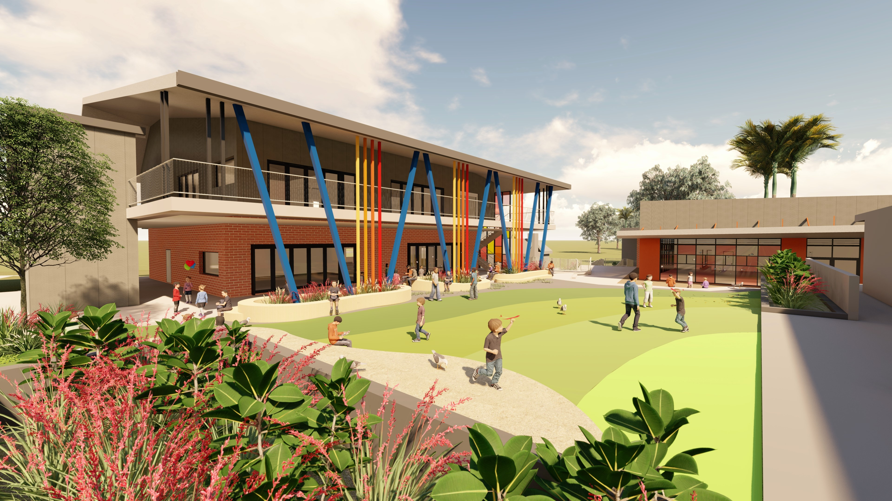

Building
A vast expanse of 3 acres provides a perfect ambience for an aesthetically chartered school building. The lung
space, the open lawns are marked with a colourful bonanza of fresh floral bounty.
An awe inspiring WiFi enabled infrastructure comprising of 90 well ventilated classrooms, science, maths and language laboratories
and libraries where books span time, space, culture and genre. To aid the process of learning we have a sound proof auditorium,
state of art recording studio, an AV room, two resource centres for teachers, a sports field, a basement to facilitate physical
fitness and indoor games, a discovery room to enhance the scientific temperament
and an art gallery to showcase the creative flair of the students.

Labs
A good layout for a school science laboratory needs to take into account clear lines of communication between the teacher and students.
Sharing of ideas and group discussions can be carried out effectively in a well-planned laboratory.
The lab should be structured in such a
way that it makes it easy for students and teachers to move about.